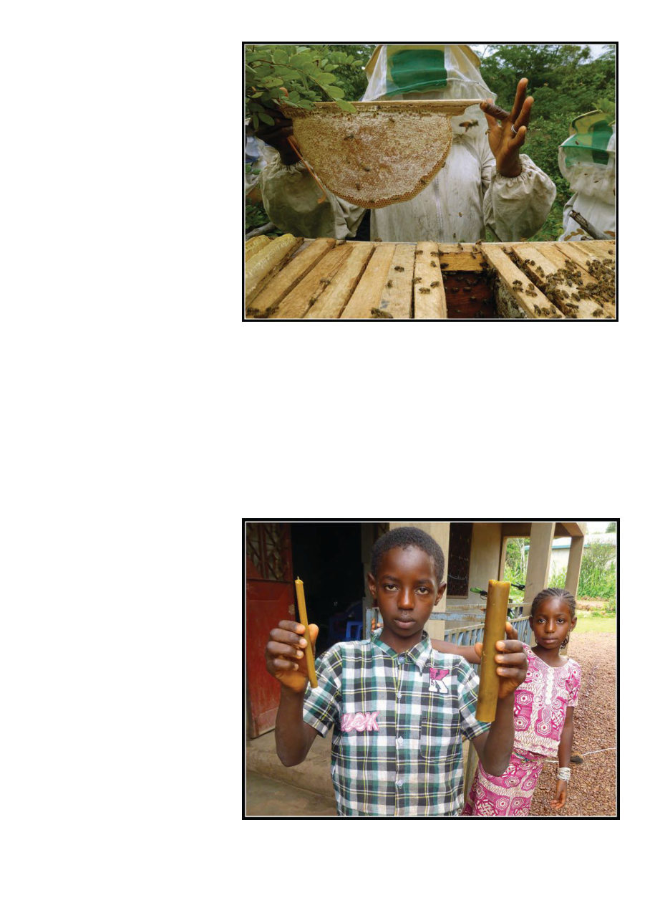

January 2020
107
A topbar comb ready to be harvested
Some locally made candles
its equipment was all either removed
or wrecked. There also had formerly
been an airport in Labé which is now
an empty field people attempt to build
on, but the government harasses them
because on paper it’s still an airfield.
In the one remaining airport with in-
tercontinental flights, in the capital,
an employee told me Air France owns
the airport and charges any other air-
line by the minute to be on the ground
there, which explains why my Ghana-
bound outward flight embarked and
disembarked passengers simultane-
ously in what appeared to be a des-
perate hurry. But on the bright side
the French legacy has left them with
croissants which utterly eclipse what
I thought was a “croissant” in Califor-
nia, so there’s that.
Driving back to the capital we
passed Ebola response medical con-
voys headed into the interior. Twice
on our return, at police checkpoints
they made us completely unload the
car for their inspection, in presumed
himself had been born in Timbuktu
in neighboring Mali, but as radical
insurgents flying a sinister black flag
had taken over that portion of Mali,
he was temporarily in Guinea.
I found a lot of problems faced by
the beekeeping sector in Guinea to
be larger than individual beekeeping
skills. Because most of the beehives I
visited were communally owned, no
individual person was taking respon-
sibility for them and they were often
poorly maintained as a result. There
followed concerns about the equal
distribution of profits, and questions
about the responsibilities of the local
groups versus the unions and federa-
tion. The Federation, with staff and
(some) resources, is in a good position
to buy honey and professionally pack
and distribute it, but they are con-
strained by resources and have been
buying on credit and only able to pay
the beekeepers months later, which
is hard for the beekeepers. There are
corruption problems trying to sell in
the capital, and significant licensing
problems that must be overcome to
export honey to America or Europe.
Because I am not actually an ex-
pert at exporting honey out of Africa,
through my own organization, Bee
Aid International, I brought in some-
one who was. In Ethiopia in 2012 I
had met Daniel Gebremeskel who
runs a honey processing plant and
honey export business there (https://
comel.fm.alibaba.com/) (see my ar-
ticle in September 2012 ABJ). Ethio-
pians don’t end up in Guinea often
(they’re 3,500 miles apart, compared
to only about 2,500 miles between Los
Angeles and New York, and getting to
New York rarely leaves you stranded
in Cote D’Ivoire for three days), so it
was almost as interesting a cultural
interchange between Daniel and the
locals as it was for me. He gave a
very good presentation to the FAPI
staff, sharing his substantial experi-
ence with them. He hoped to return
as well but there have been very few
beekeeping USAID projects since 2016
so I haven’t been back myself.
Another problem faced in Guinea
is seemingly punitive French poli-
cies that continue to this day. In 1958
Guinea was the first French colony
to declare independence, which they
did while declining to join the loose
French commonwealth of other for-
mer colonies. As a result, France
ripped up all the railways and other
infrastructure they had built before
departing. There had apparently been
a honey processing plant in Labé but